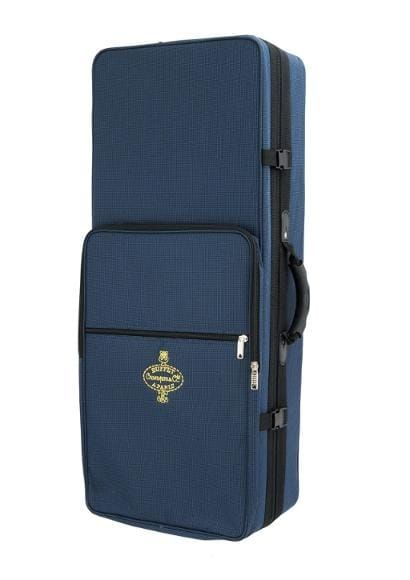
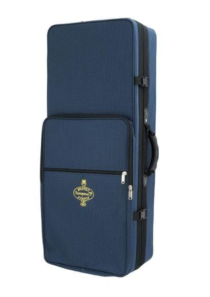

Today I had my first lesson 🎷.
On the Saturday before I went into town and bought a Sax, a book and some reeds from JG Windows.
I'd had an intro lesson the week before and got advice on what to buy. And so the journey begins...
Products

.")
Instrument
Buffet 100-series Alto Saxophone Outfit
 

The Buffet 100 Series Alto Sax has a range of features that you would expect on a top end instrument. Superb for beginners and students, this instrument is a delightful instrument to learn with as wel a great addition to any reed players as a 2nd instrument which is both reliable and afforadble.
The saxophone's consistent intonation as well as easy blowing and response makes this instrument a top class tool for learning music. A wonderful centered tone gives all students a flavour of professional saxophone sounds. This instrument has been made using many professional techniques that are implemented in saxophones of much more value.
The ribbed manufacture of the body concentrates airflow, creating a freer blowing instrument. The premium pads and metal resonators create a full bodied tone and good intonation. This combined with blue steel springs creates an easy action which is ideal for kids and beginners to learn on.
This instrument is finished off with a lacquer, hand engraving on the bell and mother of pearl key buttons.
Links
- https://jgwindows.com/buffet-100-series-alto-saxophone.html
- https://jgwindows.com/vandoren-alto-sax-reeds-2-traditional-3-pack.html
- https://jgwindows.com/abracadabra-saxophone-pupil-s-book.html